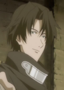
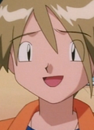

|
Helbram |
|
Helbram is King's best friend. He is a Holy Knight, Guila's master and subordinate from Hendrickson. He has a serious personality due to his human face. He is a shape-shifter. Ryotaro Okiayu voiced Aldrich(Helbram's false form). |
 |
Igor Neuhaus |
- Blue Exorcist
- Blue Exorcist: Kuro's Trip Away From Home
|
Igor Neuhaus is an Upper First Class Exorcist and a lecturer at True Cross Academy. He is a survivor of the Blue Night. He is extremely loyal to Mephisto, another one of Satan's son. He hates Satan immensely, as well as any Demons related to Satan. |
 |
Scar |
- Fullmetal Alchemist
- Fullmetal Alchemist: Reflections
- Fullmetal Alchemist: Premium Collection
|
Scar is a nameless lone serial killer who targets State Alchemist. He is an Ishvalan survivor of the Ishvalan Civil War. He is a vicious and angry man but very protective. He cares about his love one. |
 |
Soe Nakiri |
- Food Wars! The Third Plate: Totsuki Train Arc
|
Soe Nakiri is the founder of Nakiri International and Alice Nakiri's father. He is extremely doveted to his wife and his daughter. He remains neutral in judging. |
 |
Tiger's Eye |
- Sailor Moon Super S
- Sailor Moon Super S Special
- Sailor Moon Super S Memorial
|
Tiger's Eye is a member of the Dead Moon Cricus, and is part of the Amazon Trio. He is the leader of the Amazon trio. He targets young girls that he found attractive that he found atrractive and ofen making them fall in love with him. He is the one who took the job most frequently. |
|  |
Tybalt |
|
Tybalt is a mysterious warrior who aids the Caplet retainers. He is loyal but a hot-headed man. He is a member of Montague and Caplet. |
|  |
Zane |
|
Zane is one of Suzie's friend from nursery school. He shares the same dream as Suzie of becoming famous Pokemon Breeder. He believes that a Pokemon's true beauty comes from its physical appearance. |